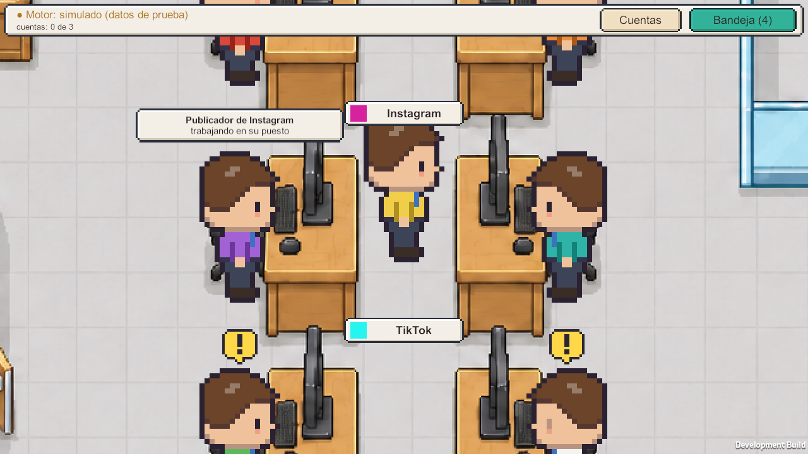
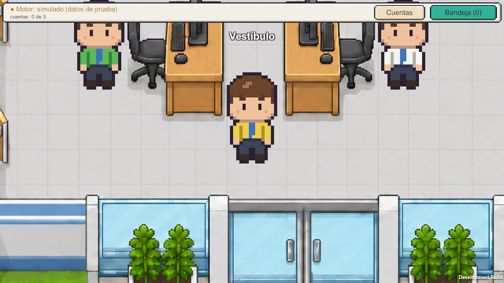
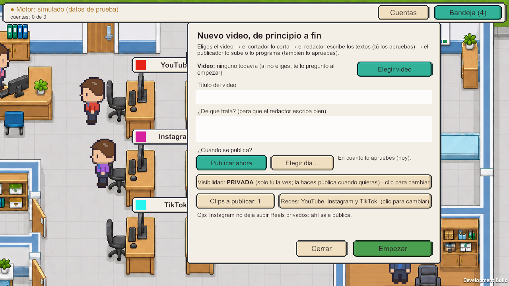

GetComponent Studio presents Pixel Agent Department
Your social media team, as a pixel-art office.
Pixel Agent Department is a game for Windows. Its AI agents edit, write and publish your short videos on your own Instagram, TikTok and YouTube accounts, and track how they perform. Nothing is published without your approval.
- TikTok
- YouTube

How it works
- Connect your accounts. You sign in with Instagram, TikTok or Google in your browser, on the official login page of each network. You choose what to share.
- Hand a video to the boss. Pick a clip on your PC. The editor cuts it and the writer drafts a caption for each network.
- Approve it. Preview each post on a phone mock-up, edit the text, choose the date and whether it is public or private, and approve.
- Watch the numbers. Each network's office shows your account, what is scheduled, and the views, likes and comments of what you published.
What the agents do
- Publish the videos you approved, now or at the time you chose (Instagram Reels, TikTok videos, YouTube Shorts).
- Read the stats of your account and videos (followers, views, likes, comments) to show them in the office.
- Instagram comments: when someone comments your keyword (for example "INFO") on a post, the responder proposes a private message to that person with the info you set up, plus a short public reply. You approve each one. Comments are not sent to any AI.
Your videos go straight from your PC to each network. Your sign-in tokens are stored encrypted on your PC. Read the Privacy Policy for the details.
Screenshots


Contact
Pixel Agent Department is made by GetComponent Studio. Questions, support or data requests: getcomponentstudio@gmail.com.
Tu equipo de redes, convertido en una oficina pixel art.
Pixel Agent Department es un juego para Windows. Sus agentes con IA cortan, redactan y publican tus videos cortos en tus propias cuentas de Instagram, TikTok y YouTube, y siguen cómo les va. No se publica nada sin tu aprobación.
Cómo funciona
- Conecta tus cuentas. Entras con Instagram, TikTok o Google en tu navegador, en la página de inicio de sesión oficial de cada red. Tú eliges qué compartes.
- Dale un video al jefe. Eliges un clip de tu PC. El cortador lo corta y el redactor escribe el texto para cada red.
- Apruébalo. Ves cada publicación en un celular de muestra, cambias el texto, eliges el día y si es pública o privada, y apruebas.
- Mira los números. La oficina de cada red muestra tu cuenta, lo programado y las vistas, likes y comentarios de lo publicado.
Qué hacen los agentes
- Publican los videos que apruebas, ahora o a la hora que elijas (Reels de Instagram, videos de TikTok y Shorts de YouTube).
- Leen los números de tu cuenta y de tus videos (seguidores, vistas, likes y comentarios) para mostrarlos en la oficina.
- Comentarios de Instagram: cuando alguien comenta tu palabra clave (por ejemplo, «INFO») en una publicación, el respondedor propone un mensaje privado a esa persona con la información que preparaste y una respuesta pública corta. Tú apruebas cada una. Los comentarios no se envían a ninguna IA.
Tus videos van directos de tu PC a cada red. Los accesos a tus cuentas se guardan cifrados en tu PC. Los detalles están en la Política de privacidad.
Contacto
Pixel Agent Department lo hace GetComponent Studio. Dudas, soporte o solicitudes sobre tus datos: getcomponentstudio@gmail.com.